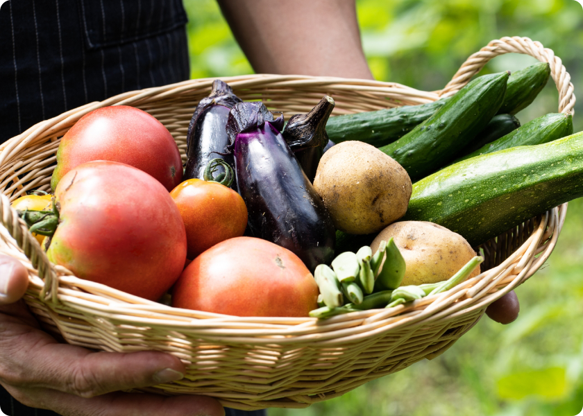
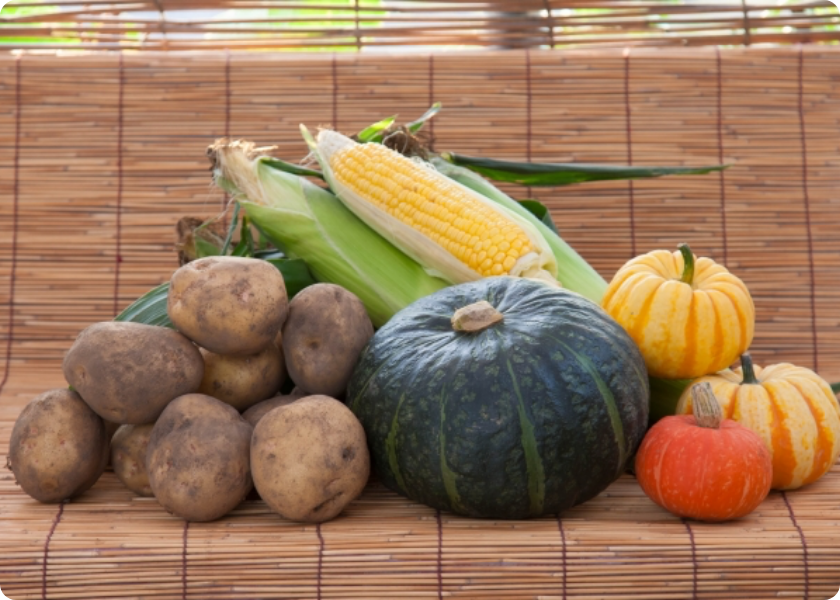
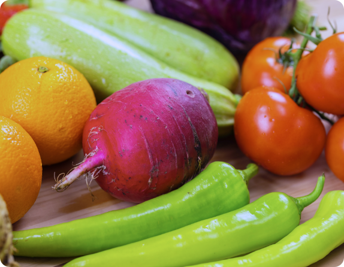
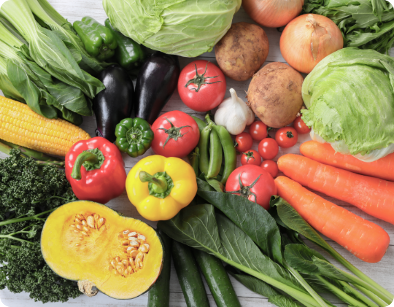
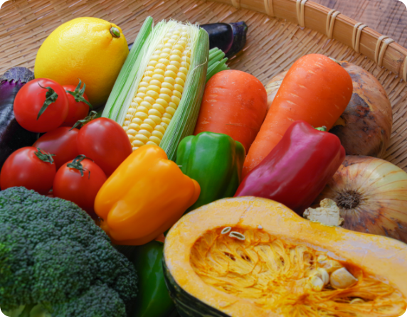
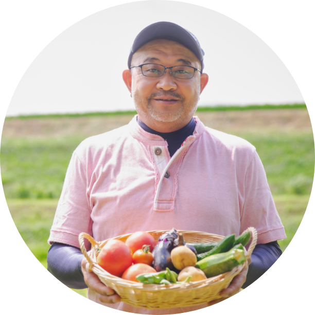
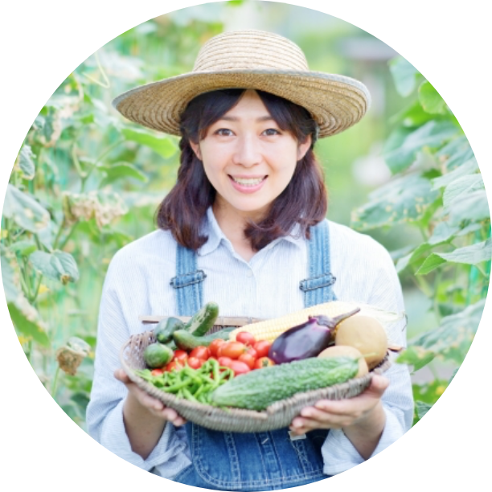

厳選したオーガニック農家さんが作った獲れたての野菜が、その時々の旬に合わせて届きます。
食材から選べるのはもちろん、生産者からも選べます。
生産方法や生産地、それぞれ異なるこだわりで、お気に入りの農家さんを見つけてください。
食材から選べるのはもちろん、生産者からも選べます。生産方法や生産地、それぞれ異なるこだわりで、お気に入りの農家さんを見つけてください。
スグ食べが選ばれる
3つの理由
-
01
生産地から直接お届け
「収穫したばかりの新鮮な状態で、野菜を味わって欲しい」
スグ食べでは、生産者が収穫したその日に、お客様の元へ直送で野菜をお送りします。倉庫を介さないため、最短で24時間以内に新鮮な野菜が届きます。 -
02
安心安全な無農薬野菜
出品している生産者は、有機栽培もしくは自然栽培の農家のみ。全ての商品が無農薬・無化学肥料など、安全にこだわって生産された「オーガニック野菜」です。そのため、どの商品も安心してお買い求めいただけます。
-
03
たくさんの旬な野菜との出会い
年間数十種の野菜を作る生産者から、今が旬の多様な野菜が届きます。
中には100種類もの多品種を育てる生産者もいます。珍しい野菜との出会いもお楽しみください。
自信があるから、是非食べてもらいたい
１回限り！少量お試しセット
-

【ベジックス】旬＊お試し野菜セット(6品目)
￥1,280（税込 / 送料別）
生産者：千葉県 松戸市 ベジックス -

【くちぶえ農園】旬＊お試し野菜セット(6品目)
￥1,280（税込 / 送料別）
生産者：長野県 飯田市 くちぶえ農園
試したあとは
定期便セット(一例)
-

【ベジックス】
季節の野菜セット(8品目/1-2人家族向け)￥2,390（税込 / 送料別）
生産者：千葉県 松戸市 ベジックス -

【くちぶえ農園】
季節の野菜セット(10品目/3-4人家族向け)￥3,850（税込 / 送料別）
生産者：長野県 飯田市 くちぶえ農園 -

【ひだまり農場】
季節の野菜セット(12品目/5-6人家族向け)￥4,919（税込 / 送料別）
生産者：岡山県 美作市 ひだまり農場
スグ食べの品質保証
商品に不備があった際には、スグ食べが “全額” 返金対応します。
スグ食べに出品している農家さんたちは、
「大切に育てた自慢の農作物を、できるだけ美味しい状態で食べてもらいたい」
そんな想いを持った農家さんばかりです。そのため、収穫から梱包・出荷にいたるまでしっかりと品質管理されています。
とはいえ、実物を見ずに野菜や果物を購入するのはちょっと不安…
そんな方にもご購入いただけるよう、スグ食べでは安心安全な品質をお約束しています。万が一届いた商品に不備があった際には、スグ食べにて全額返金対応いたします。
スグ食べが扱う
”オーガニック野菜”ってどんなもの？
スグ食べが扱っている野菜は、「有機栽培」もしくは「自然栽培」で作られたものに限られます。有機栽培は農薬・化学肥料を使用しない栽培方法で、国で定められた有機JAS規格という厳しい基準をクリアしたものです。この基準をクリアしてはじめて、”有機”、”オーガニック”を名乗ることができます。自然栽培は、有機肥料すら使用せず自然の力で育て上げる方法です。これらの方法で栽培することは簡単ではなく収穫量も控えめなため、一般的なスーパーでオーガニック野菜を目にすることはあまりないかもしれません。
| 自然栽培 | 有機栽培 （有機JAS規格） |
慣行栽培 （一般的） |
|
|---|---|---|---|
| 農薬 | × | × | ○ |
| 化学肥料 | × | × | ○ |
| 有機肥料 | × | ○ | ○ |
| 収穫量 | 少ない | やや少ない | ふつう |
| 生育期間 | 長い | やや長い | ふつう |
オーガニック農家は、国内全体の約0.5％だけ！
旬の野菜、なにがある？
美味しさはもちろん、栄養価も上がる”旬”。スグ食べでは旬の野菜をお届けしています。
春夏秋冬、どのような野菜が当てはまるのでしょうか。
農家さんからのメッセージ
-

安心安全なお野菜を、ご堪能ください
「ひだまり農場」では栽培期間中に農薬・化学肥料を一切使用せず、年間約100種類の野菜と米、卵を生産しています。堆肥・肥料もすべて手作りし、有機質のものを使用しています。
ひだまり農場（岡山県） 山田洋一
-

旬なお野菜を存分に楽しんでください
「爽緑農園」では農薬や除草剤は一切使用せず、一つ一つのお野菜を丁寧に栽培しています。お日様の光をたくさん浴びて育った野菜は、葉や皮まで余すことなく食べることができます。
爽緑農園 太田紘子
おかげさまで感謝のお声をいただいています
食べてわかった、この違い
-
香りまでおいしい、
新鮮さ神奈川県A様
箱を開けた途端に広がった野菜の香り。
スーパーで買った野菜とはどうしてこんなに違いがあるのかとびっくりするほど豊かな大地の香りです。
葉っぱまでシャキシャキのにんじんは特に子供がお気に入り。ゆでただけでも、野菜の甘みが優しく広がり、本来の味がたのしめます。 -
安心できる品質に
大満足千葉県O様
無農薬・無化学肥料にこだわった生産者から送られてくるため、とても安心して毎日食卓に出せるのがうれしいです。
小さな子供や働き盛りの夫など、健康に気を遣って食から体づくりをしたい我が家には、もう手放せない野菜となっています。 -
旬の野菜が食べられる
豊かさ東京都M様
鮮度にこだわる「スグ食べ」だからこそ、旬の野菜を「今だ！」と送ってきてくれるので、食卓に並ぶ野菜は常に旬の食材です。
一カ所の農家さんからではなく複数の農家から選べるので、地域によっての旬の違いも楽しめます。
たまに、スーパーに並ばないような珍しい野菜がまざるのも、わくわくしますね。
よくある質問
-
産地直送のサービスってよく見るけど、
何が違うの？鮮度が抜群に違います。
通常の産直サービスは、一度倉庫などに野菜を集め、そこで箱詰め作業をして配送しています。この仕組みでは、お客様が商品を受け取る時には収穫してから3,4日が経過しています。スグ食べでは、箱詰め作業を農家さんにお願いすることにより、最短で収穫当日に商品を受け取ることができます。 -
どんな農家さんが登録しているの？
無農薬にこだわる、オーガニック農家さんのみが登録しています。
有機栽培や自然栽培などの環境に配慮した農法で生産するには、通常以上に手間も費用もかかります。そんな中でも、「安心な野菜を食べて欲しい」という強い思いを持って、こだわって野菜を作っている農家さんがいます。 そういった、厳選されたオーガニック農家さんのみが登録しているため、安心してお買い物を楽しんでいただけます。
メディア情報
-
雑誌『頑張る農家』で紹介されました -
テレビXX「やさしいせいかつ」番組内で紹介されました -
雑誌『new nomal』で紹介されました -
YouTube「平凡主婦」で紹介されました
自信があるから、是非食べてもらいたい
１回限り！少量お試しセット
-
【ベジックス】旬＊お試し野菜セット(6品目)
￥1,280（税込 / 送料別）
生産者：千葉県 松戸市 ベジックス -
【くちぶえ農園】旬＊お試し野菜セット(6品目)
￥1,280（税込 / 送料別）
生産者：長野県 飯田市 くちぶえ農園